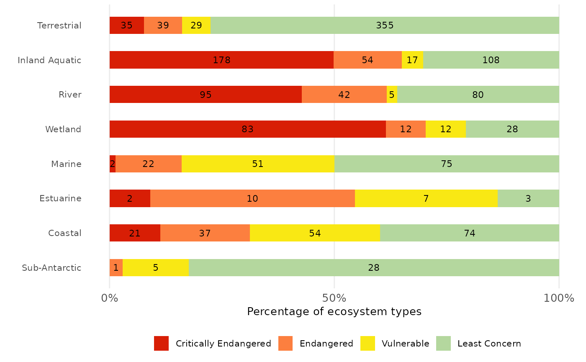
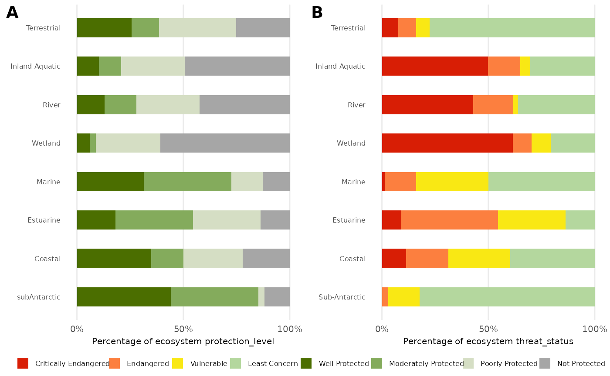
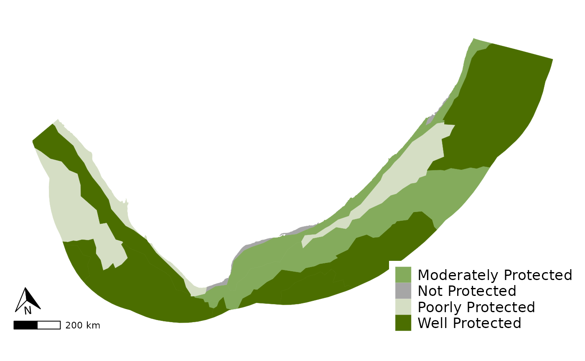

This Vignette is to help users become familiar with the NBA package and get the most use out of its functions.
This package was create to help create the figures, plots, tables, and maps for the NBA. The functions are split into those used to make plots, those used to makes tables, and those used to make maps.
The plot functions consist of one main plot funcion called NBA_plot that will create either a bar or donut plot and colour the graph by matching the category words (such as endangered, well protected, natural etc) with their set colours. There is then a complimentary function called NBA_comp which is used if you want to plot two plots together using gg_arrange as the underlying code, and NBA_theme that is a ggplot theme with all the NBA presets that can be applied to any ggplot object to ensure the graph maintains the NBA ‘look’.
The table functions consist of NBA_tbl which makes a basic table for a quarto document outputting to an html, NBA_bl_colr which makes a basic table with a purple heading bar and colours the category names by their preset colours. There is also a complimentary NBA_tbl_theme function that styles any gt table with the NBA’s preset styling.
The map functions currently only consist of one function NBA_map, made using ggplot 2 and recreates the maps in the marine technical report 2018.
There are then five example datasets that can be accessed to test the functions and see the required format of the data to use the functions, which are: NBA_example_thr_data, NBA_example_pro_data, NBA_example_comb_data, NBA_example_RLI_data, and NBA_example_map_data. There is also a list of the category names (NBA_categories) that are recognised by the function so that you can make sure you are using the correct naming convention. The functions are case sensitive so you must be careful when naming your categories.
Plot functions
Load the example data and use the variouse functions to create NBA plots.
1. bar plot
NBA_example_thr_data <- NBA_example_thr_data
bar_plot <- nba_plot(NBA_example_thr_data,
`OVERALL types`,
2:5,
CHRT = "bar",
NUM = TRUE,
LAB = "Percentage of ecosystem types",
SAVE = NULL)
bar_plot
2. donut plot
NBA_example_pro_data <- NBA_example_pro_data
donut_plot <- nba_plot(NBA_example_pro_data,
`OVERALL types`,
2:5,
CHRT = "donut",
NUM = TRUE,
LAB = "Percentage of ecosystem types",
GRP = F,
SAVE = NULL)
donut_plot
3. Combined plot
NBA_example_pro_data <- NBA_example_pro_data
NBA_example_thr_data <- NBA_example_thr_data
NBA_example_comb_data <- NBA_example_comb_data
bar_plot_comb <- nba_plot_comb(
NBA_example_comb_data,
GROUPS= `OVERALL types`,
METRIC_COL = metric,
METRICS = c("protection_level", "threat_status"),
COLS = 3:10,
CHRT = "bar",
NUM = FALSE,
LAB = "Percentage of ecosystem",
SAVE=NULL)
bar_plot_comb
4. RLI plot
NBA_example_RLI_data <- NBA_example_RLI_data
RLI_plot <- nba_plot_RLI(NBA_example_RLI_data,
Years,
RLI,
min,
max)
RLI_plot
5. NBA bubble plot
NBA_example_bubble_data <- NBA_example_bubble_data
bubble_plot <- nba_plot_bubble(DF = NBA_example_bubble_data,
GROUP = taxon_group,
CAT = pressure,
SUB_CAT = sub_pressure,
VALUE = perc_concern_under_press,
SAVE = NULL)
bubble_plot
6. NBA ggplot theme
library(ggplot2)
NBA_example_pro_data <- NBA_example_pro_data
gg_plot <- ggplot(NBA_example_pro_data, aes(x = `OVERALL types`, y = `Well Protected`))+
ggplot2::geom_point()+
nba_plot_theme()
gg_plot
Table functions
Please note that these are designed to render on html outputs and so may not appear correct in the vignette examples.
7. Basic table
tbl <- nba_tbl(NBA_example_pro_data)
tbl| OVERALL types | Well Protected | Moderately Protected | Poorly Protected | Not Protected |
|---|---|---|---|---|
| subAntarctic | 15 | 14 | 1 | 4 |
| Coastal | 65 | 28 | 52 | 41 |
| Estuarine | 4 | 8 | 7 | 3 |
| Marine | 47 | 62 | 22 | 19 |
| Wetland | 8 | 4 | 41 | 82 |
| River | 29 | 33 | 66 | 94 |
| Inland Aquatic | 37 | 37 | 107 | 176 |
| Terrestrial | 118 | 59 | 166 | 115 |
8. Coloured table
library(dplyr)
#>
#> Attaching package: 'dplyr'
#> The following objects are masked from 'package:stats':
#>
#> filter, lag
#> The following objects are masked from 'package:base':
#>
#> intersect, setdiff, setequal, union
library(tidyr)
tbl <- NBA_example_pro_data %>%
pivot_longer(2:5, names_to = "protection_level") %>%
nba_tbl_colr(COL = protection_level)
tbl| OVERALL types | protection_level | value |
|---|---|---|
| subAntarctic |
Well Protected
|
15 |
| subAntarctic |
Moderately Protected
|
14 |
| subAntarctic |
Poorly Protected
|
1 |
| subAntarctic |
Not Protected
|
4 |
| Coastal |
Well Protected
|
65 |
| Coastal |
Moderately Protected
|
28 |
| Coastal |
Poorly Protected
|
52 |
| Coastal |
Not Protected
|
41 |
| Estuarine |
Well Protected
|
4 |
| Estuarine |
Moderately Protected
|
8 |
| Estuarine |
Poorly Protected
|
7 |
| Estuarine |
Not Protected
|
3 |
| Marine |
Well Protected
|
47 |
| Marine |
Moderately Protected
|
62 |
| Marine |
Poorly Protected
|
22 |
| Marine |
Not Protected
|
19 |
| Wetland |
Well Protected
|
8 |
| Wetland |
Moderately Protected
|
4 |
| Wetland |
Poorly Protected
|
41 |
| Wetland |
Not Protected
|
82 |
| River |
Well Protected
|
29 |
| River |
Moderately Protected
|
33 |
| River |
Poorly Protected
|
66 |
| River |
Not Protected
|
94 |
| Inland Aquatic |
Well Protected
|
37 |
| Inland Aquatic |
Moderately Protected
|
37 |
| Inland Aquatic |
Poorly Protected
|
107 |
| Inland Aquatic |
Not Protected
|
176 |
| Terrestrial |
Well Protected
|
118 |
| Terrestrial |
Moderately Protected
|
59 |
| Terrestrial |
Poorly Protected
|
166 |
| Terrestrial |
Not Protected
|
115 |
9. gt table theme
| OVERALL types | Critically Endangered | Endangered | Vulnerable | Least Concern | TOT |
|---|---|---|---|---|---|
| Sub-Antarctic | 0 | 1 | 5 | 28 | 34 |
| Coastal | 21 | 37 | 54 | 74 | 186 |
| Estuarine | 2 | 10 | 7 | 3 | 22 |
| Marine | 2 | 22 | 51 | 75 | 150 |
| Wetland | 83 | 12 | 12 | 28 | 135 |
| River | 95 | 42 | 5 | 80 | 222 |
| Inland Aquatic | 178 | 54 | 17 | 108 | 357 |
| Terrestrial | 35 | 39 | 29 | 355 | 458 |
10. Threatened ecosystems protection level table
thr_pro_tbl <- NBA_example_map_data |>
nba_tbl_comb(GROUP = P_EcosysType,
THR = threat_status,
PRO = protection_level,
FILE = "spatial")
thr_pro_tbl| Not Protected | Poorly Protected | Moderately Protected | Well Protected | Total | |
|---|---|---|---|---|---|
| Critically Endangered | 0 | 1 | 1 | 1 | 3 |
| Endangered | 0 | 1 | 0 | 1 | 2 |
| Vulnerable | 1 | 0 | 1 | 1 | 3 |
| Near Threatened | 0 | 0 | 1 | 1 | 2 |
| Least Concern | 0 | 1 | 1 | 1 | 3 |
| Total (n) | 1 | 3 | 4 | 5 | 13 |
Map functions
11. Basic map
Please note this was modeled after the maps in the marine technical report 2018.
map <- nba_map(DF = NBA_example_map_data,
GEOM = geometry,
CAP = "Figure 1. A map of the protection level of marine pelagic ecosystem types in South Africa",
FILL = protection_level)
map